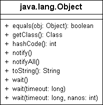
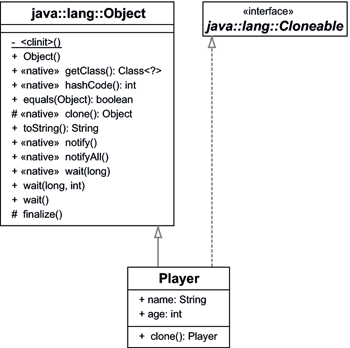

8.3 Object ist die Mutter aller Klassen
java.lang.Object ist die oberste aller Eltern-Klassen. Somit spielt diese Klasse eine ganz besondere Rolle, da alle anderen Klassen automatisch Unterklassen sind und die Methoden erben beziehungsweise überschreiben.
Abbildung 8.9: UML-Diagramm der absoluten Basisklasse Object
8.3.1 Klassenobjekte
Zwar ist jedes Objekt ein Exemplar einer Klasse – doch was ist eine Klasse? In einer Sprache wie C++ existieren Klassen nicht zur Laufzeit, und der Compiler übersetzt die Klassenstruktur in ein ausführbares Programm. Im absoluten Gegensatz dazu steht Smalltalk: Diese Laufzeitumgebung verwaltet Klassen selbst als Objekte. Diese Idee, Klassen als Objekte zu repräsentieren, übernimmt auch Java – Klassen sind Objekte vom Typ java.lang.Class.
class java.lang.Object |
- final Class<? extends Object> getClass()
Liefert die Referenz auf das Klassenobjekt, die das Objekt konstruiert hat. Das Class-Objekt ist immer eindeutig in der JVM, sodass auch mehrere Anfragen an getClass() immer dasselbe Class-Objekt liefern.
| Beispiel |
|
Die Objektmethode getName() eines Class-Objekts liefert den Namen der Klassen: System.out.println( "Klaviklack".getClass().getName() ); // java.lang.String |
Klassen-Literale
Ein Klassen-Literal (engl. class literal) ist ein Ausdruck der Form Datentyp.class, wobei Datentyp entweder eine Klasse, eine Schnittstelle, ein Feld oder ein primitiver Typ ist. Beispiele sind String.class, Integer.class oder int.class (was nicht mit Integer.class identisch ist). Der Ausdruck ist immer vom Typ Class. Bei primitiven Typen liefert die Schreibweise primitiverTyp.class das gleiche Ergebnis wie WrapperTyp.TYPE; es ist also Integer.TYPE identisch mit int.class. Class-Objekte spielen insbesondere bei dynamischen Abfragen über die sogenannte Reflection eine Rolle. Zur Laufzeit können so beliebige Klassen geladen, Objekte erzeugt und Methoden aufgerufen werden.
8.3.2 Objektidentifikation mit toString()
Jedes Objekt sollte sich durch die Methode toString() mit einer Zeichenkette identifizieren und den Inhalt der interessanten Attribute als Zeichenkette liefern.
| Beispiel |
|
Die Klasse Point implementiert toString() so, dass der Rückgabestring die Koordinaten enthält: System.out.println( new java.awt.Point() ); // java.awt.Point[x=0,y=0] |
Das Angenehme ist, dass toString() automatisch aufgerufen wird, wenn die Methoden print() oder println() mit einer Objektreferenz als Argument aufgerufen werden. Ähnliches gilt für den Zeichenkettenoperator + mit einer Objektreferenz als Operand:
Listing 8.10: com/tutego/insel/object/tostring/Player.java, Player
public class Player
{
String name;
int age;
@Override
public String toString()
{
return getClass().getName() + "[name=" + name + ",age=" + age + "]";
}
}
Die Ausgabe mit den Zeilen
Listing 8.11: com/tutego/insel/object/tostring/PlayerToStringDemo.java, main()
Player tinkerbelle = new Player();
tinkerbelle.name = "Tinkerbelle";
tinkerbelle.age = 32;
System.out.println( tinkerbelle.toString() );
System.out.println( tinkerbelle );
ist damit:
com.tutego.insel.object.tostring.Player[name=Tinkerbelle,age=32]
com.tutego.insel.object.tostring.Player[name=Tinkerbelle,age=32]
Bei einer eigenen Implementierung müssen wir darauf achten, dass die Sichtbarkeit public ist, da toString() in der Oberklasse Object öffentlich vorgegeben ist und wir in der Unterklasse die Sichtbarkeit nicht einschränken können. Zwar bringt die Spezifikation nicht deutlich zum Ausdruck, dass toString() nicht null als Rückgabe liefern darf, doch ist dann der Leerstring "" allemal besser. Die Annotation @Override macht das Überschreiben deutlich.
Standardimplementierung
Neue Klassen sollten toString() überschreiben. Ist dies nicht der Fall, gelangt das Programm zur Standardimplementierung in Object, wo lediglich der Klassenname und der wenig aussagekräftige Hash-Wert hexadezimal zusammengebunden werden.
public String toString()
{
return getClass().getName() + "@" + Integer.toHexString(hashCode());
}
Zur Methode:
class java.lang.Object |
- String toString()
Liefert eine String-Repräsentation des Objekts aus Klassenname und Hash-Wert.
Zwar sagt der Hash-Wert selbst wenig aus, allerdings ist er ein erstes Indiz dafür, dass bei Klassen, die keine toString()- und hashCode()-Methoden überschreiben, zwei Referenzen nicht identisch sind.
| Beispiel |
|
Ein Objekt der class A {} wird gebildet, und toString() liefert die ID, die ausgegeben wird: System.out.println( new A().toString() ); // A@923e30 |
toString()-Methode generieren lassen
Die Methode eignet sich gut zum Debugging, doch ist das manuelle Tippen der Methoden lästig. Zwei Lösungen vereinfachen das Implementieren der Methode toString():
- Eclipse und NetBeans können standardmäßig über das Kontextmenü eine toString()-Methode anhand ausgewählter Attribute generieren. Das Gleiche gilt im Übrigen auch für equals() und hashCode().
- Die Zustände werden automatisch über Reflection ausgelesen. Hier führt Apache Commons Lang (http://jakarta.apache.org/commons/lang/) auf den richtigen Weg.
8.3.3 Objektgleichheit mit equals() und Identität
Ob zwei Referenzen dasselbe Objekt repräsentieren, stellt der Vergleichsoperator == fest. Er testet die Identität, nicht jedoch automatisch die inhaltliche Gleichheit. Am Beispiel mit Zeichenketten ist das gut zu erkennen: Ein Vergleich mit firstname == "Christian" hat im Allgemeinen einen falschen, unbeabsichtigten Effekt, obwohl er syntaktisch korrekt ist. An dieser Stelle sollte der inhaltliche Vergleich stattfinden: Stimmen alle Zeichen der Zeichenkette überein?
Eine equals()-Methode sollte Objekte auf Gleichheit prüfen. So besitzt das String-Objekt eine Implementierung, die jedes Zeichen vergleicht:
String firstname = "Christian";
if ( firstname.equals( "Christian" ) )
...
class java.lang.Object |
- boolean equals(Object o)
Testet, ob das andere Objekt gleich dem eigenen ist. Die Gleichheit definiert jede Klasse für sich anders, doch die Basisklasse vergleicht nur die Referenzen o == this.
equals()-Implementierung aus Object und Unterklassen
Die Standardimplementierung aus der absoluten Oberklasse Object kann über die Gleichheit von speziellen Objekten nichts wissen und testet lediglich die Referenzen:
public boolean equals( Object obj )
{
return this == obj;
}
Überschreibt eine Klasse equals() nicht, ist das Ergebnis von o1.equals(o2) gleichwertig mit o1 == o2. Unterklassen überschreiben diese Methode, um einen inhaltlichen Vergleich mit ihren Zuständen vorzunehmen. Die Methode ist in Unterklassen gut aufgehoben, denn jede Klasse benötigt eine unterschiedliche Logik, um festzulegen, wann ein Objekt gleich einem anderen Objekt ist.
Nicht jede Klasse implementiert eine eigene equals()-Methode, sodass die Laufzeitumgebung unter Umständen ungewollt bei Object und seinem Referenzenvergleich landet. Dies hat ungeahnte Folgen, und diese Fehleinschätzung kommt leider bei Exemplaren der Klassen StringBuffer und StringBuilder vor, die kein eigenes equals() implementieren. Wir haben dies bereits in Kapitel 4, »Der Umgang mit Zeichenketten«, erläutert.
equals()-Methode überschreiben
Bei selbst deklarierten Methoden ist Vorsicht geboten, da wir genau auf die Signatur achten müssen. Die Methode muss ein Object akzeptieren und boolean zurückgeben. Wird diese Signatur falsch verwendet, kommt es statt zu einer Überschreibung der Methode zu einer Überladung und bei einer Rückgabe ungleich boolean zu einer zweiten Methode mit gleicher Signatur, was Java nicht zulässt (Java erlaubt bisher keine kovarianten Parametertypen). Um das Problem zu minimieren, sollte die Annotation @Override an equals() angeheftet sein.
Die equals()-Methode stellt einige Anforderungen:
- Heißt der Vergleich equals(null), so ist das Ergebnis immer false.
- Kommt ein this hinein, lässt sich eine Abkürzung nehmen und true zurückliefern.
- Das Argument ist zwar vom Typ Object, aber dennoch vergleichen wir immer konkrete Typen. Eine equals()-Methode einer Klasse X wird sich daher nur mit Objekten vom Typ X vergleichen lassen. Eine spannende Frage ist, ob equals() auch Unterklassen von X beachten soll.
- Eine Implementierung von equals() sollte immer eine Implementierung von hashCode() bedeuten, denn wenn zwei Objekte equals()-gleich sind, müssen auch die Hashwerte gleich sein. Bei einer geerbten hashCode()-Methode aus Object ist das aber nicht in jedem Fall erfüllt.
| Hinweis |
|
Der Datentyp für den Parameter in der equals()-Methode ist immer Object und niemals etwas anderes, da sonst equals() nicht überschrieben, sondern überladen wird. Folgendes für eine Klasse Player ist also falsch: public class Player |
Beispiel einer eigenen equals()-Methode
Die beiden ersten Punkte sind leicht erfüllbar, und ein Beispiel für einen Club mit den Attributen numberOfPersons und sm (für die Quadratmeter) ist schnell implementiert:
@Override
public boolean equals( Object o )
{
if ( o == null )
return false;
if ( o == this )
return true;
Club that = (Club) o;
return this.numberOfPersons == that.numberOfPersons
&& this.sm == that.sm;
}
Diese Lösung erscheint offensichtlich, führt aber spätestens bei einem Nicht-Club-Objekt zu einer ClassCastException. Das Problem scheint schnell behoben:
if ( ! o instanceof Club )
return false;
Jetzt sind wir auf der sicheren Seite, aber das Ziel ist noch nicht ganz erreicht.
| Hinweis |
|
Die equals()-Methode sollte bei nicht passenden Typen immer false zurückgeben und keine Ausnahme auslösen. |
Das Problem der Symmetrie *
Zwar funktioniert die aufgeführte Implementierung bei finalen Klassen schön, doch bei Unterklassen ist die Symmetrie gebrochen. Warum? Ganz einfach: instanceof testet Typen in der Hierarchie, liefert also auch dann true, wenn das an equals() übergebene Argument eine Unterklasse von Club ist. Diese Unterklasse wird wie die Oberklasse die gleichen Attribute haben, sodass – aus der Sicht von Club – alles in Ordnung ist. Nehmen wir einmal die Variablen club und superClub an, die die Typen Club und SuperClub – die fiktive Unterklasse von Club – besitzen. Sind beide Objekte gleich, so ergibt club.equals(superClub) das Ergebnis true. Drehen wir den Spieß um, und fragen wir, was superClub.equals(club) ergibt. Zwar haben wir SuperClub nicht implementiert, nehmen aber an, dass dort eine equals()-Methode steckt, die nach dem gleichen instanceof-Schema implementiert wurde wie Club. Dann wird dort bei einem Test Folgendes ausgeführt: club instanceof superClub – und das ist false. Damit wird aber die Fallunterscheidung mit return false beendet. Fassen wir zusammen:
club.equals( superClub ) == true
superClub.equals( club ) == false
Das darf nicht sein, und zur Lösung dürfen wir nicht instanceof verwenden, sondern müssen fragen, ob der Typ exakt ist. Das geht mit getClass(). Korrekt ist daher Folgendes:
Listing 8.12: com/tutego/insel/object/equals/Club.java, Club
public class Club
{
int numberOfPersons;
int sm;
@Override
public boolean equals( Object o )
{
if ( o == null )
return false;
if ( o == this )
return true;
if ( ! o.getClass().equals(getClass()) )
return false;
Club that = (Club) o;
return this.numberOfPersons == that.numberOfPersons
&& this.sm == that.sm;
}
@Override
public int hashCode()
{
return (31 + numberOfPersons) * 31 + sm;
}
}
Die hashCode()-Methode besprechen wir in Abschnitt 8.3.5, »Hashcodes über hashCode() liefern« – sie steht nur der Vollständigkeit halber hier, da equals() und hashCode() immer Hand in Hand gehen sollten.
Es ist günstig, bei erweiterten Klassen ein neues equals() anzugeben, sodass auch die neuen Attribute in den Test einbezogen werden. Bei hashCode()-Methoden müssen wir eine ähnliche Strategie anwenden, was wir hier nicht zeigen wollen.
Einmal gleich, immer gleich *
Ein weiterer Aspekt von equals()[162](Eine korrekte Implementierung der Methode equals() bildet eine Äquivalenzrelation. Lassen wir die null-Referenz außen vor, ist sie reflexiv, symmetrisch und transitiv.) ist der folgende: Das Ergebnis muss während der gesamten Lebensdauer eines Objekts gleich bleiben. Ein kleines Problem steckt dabei in equals() der Klasse URL, die vergleicht, ob zwei URL-Adressen auf die gleiche Ressource zeigen. In der Dokumentation heißt es:
»Two URL objects are equal if they have the same protocol, reference equivalent hosts, have the same port number on the host, and the same file and fragment of the file.«Hostnamen gelten als gleich, wenn entweder beide auf dieselbe IP-Adresse zeigen oder – falls eine nicht auflösbar ist – beide Hostnamen gleich (ohne Groß-/Kleinschreibung) oder null sind. Da hinter den URLs http://tutego.de/ und http://java-tutor.com/ aber letztendlich http://www.tutego.com/ steckt, liefert equals() die Rückgabe true:
Listing 8.13: com/tutego/insel/object/equals/UrlEquals.java, main()
URL url1 = new URL( "http://tutego.com/" );
URL url2 = new URL( "http://www.tutego.com/" );
System.out.println( url1.equals(url2) ); // true
Die dynamische Abbildung der Hostnamen auf die IP-Adresse des Rechners kann aus mehreren Gründen problematisch sein:
- Der (menschliche) Leser erwartet intuitiv etwas anderes.
- Wenn keine Netzwerkverbindung besteht, wird keine Namensauflösung durchgeführt, und der Vergleich liefert false. Die Rückgabe sollte jedoch nicht davon abhängig sein, ob eine Netzwerkverbindung besteht.
- Dass die beiden URLs auf den gleichen Server zeigen, könnte sich zur Laufzeit ändern.
8.3.4 Klonen eines Objekts mit clone() *
Zum Replizieren eines Objekts gibt es oft zwei Möglichkeiten:
- einen Konstruktor (auch Copy-Constructor genannt), der ein vorhandenes Objekt als Vorlage nimmt, ein neues Objekt anlegt und die Zustände kopiert
- eine öffentliche clone()-Methode
Was eine Klasse nun anbietet, ist in der API-Dokumentation zu erfahren.
| Beispiel |
|
Erzeuge ein Punkt-Objekt, und klone es: java.awt.Point p = new java.awt.Point( 12, 23 ); |
Felder erlauben standardmäßig clone(). Speichern die Arrays jedoch nicht-primitive Werte, liefert clone() nur eine flache Kopie, was bedeutet, dass das neue Feldobjekt, der Klon, die exakt gleichen Objekte wie das Original referenziert und die Einträge selbst nicht klont.
clone() aus java.lang.Object
Da clone() nicht automatisch unterstützt wird, stellt sich die Frage, wie wir clone() für unsere Klassen mit geringstem Aufwand umsetzen können. Einfach clone() aufzurufen funktioniert jedoch nicht, da die Methode proteced ist, also erst einmal nicht sichtbar ist.
class java.lang.Object |
- protected Object clone() throws CloneNotSupportedException
Liefert eine Kopie des Objekts.
Eine eigene clone()-Methode
Eigene Klassen überschreiben die protected-Methode clone() aus der Oberklasse Object und machen sie public. Für die Implementierung kommen zwei Möglichkeiten in Betracht:
- Wir könnten von Hand ein neues Objekt anlegen, alle Attribute kopieren und die Referenz auf das neue Objekt zurückgeben.
- Das Laufzeitsystem soll selbst eine Kopie anlegen, und diese geben wir zurück. Lösung zwei verkürzt die Entwicklungszeit und ist auch spannender.
Um das System zum Klonen zu bewegen, müssen zwei Dinge getan werden:
- Der Aufruf super.clone() stößt die Methode clone() aus Object an und veranlasst so die Laufzeitumgebung, ein neues Objekt zu bilden und die nicht-statischen Attribute zu kopieren. Die Methode kopiert elementweise die Daten des aktuellen Objekts in das neue. Die Methode ist in der Oberklasse protected, aber das ist der Trick: Nur Unterklassen können clone() aufrufen, keiner sonst.
- Die Klasse implementiert die Markierungsschnittstelle Cloneable. Falls von außen ein clone() auf einem Objekt aufgerufen wird, dessen Klasse nicht Cloneable implementiert, ist das Ergebnis eine CloneNotSupportedException. Natürlich implementiert Object die Schnittstelle Cloneable nicht selbst, denn sonst hätten ja Klassen schon automatisch diesen Typ, was sinnlos wäre.
clone() gibt eine Referenz auf das neue Objekt zurück, und wenn es keinen freien Speicher mehr gibt, folgt ein OutOfMemoryError.
Nehmen wir an, für ein Spiel sollen Player geklont werden:
Listing 8.14: com/tutego/insel/object/clone/Player.java
package com.tutego.insel.object.clone;
public class Player implements Cloneable
{
public String name;
public int age;
@Override
public Player clone()
{
try
{
return (Player) super.clone();
}
catch ( CloneNotSupportedException e ) {
// Kann eigentlich nicht passieren, da Cloneable
throw new InternalError();
}
}
}
Da es seit Java 5 kovariante Rückgabetypen gibt, gibt clone() nicht lediglich Object, sondern den Untertyp Player zurück.
Abbildung 8.10: Player erweitert Object und implementiert Cloneable
Testen wir die Klasse etwa so:
Listing 8.15: com/tutego/insel/object/clone/PlayerCloneDemo.java, main()
Player susi = new Player();
susi.age = 29;
susi.name = "Susi";
Player dolly = susi.clone();
System.out.println( dolly.name + " ist " + dolly.age ); // Susi ist 29
| Hinweis |
|
Erben wir von einer Klasse mit implementierter clone()-Methode, die ihrerseits mit super.clone() arbeitet, bekommen wir von oben gleich auch die eigenen Zustände kopiert. |
clone() und equals()
Die Methode clone() und die Methode equals() hängen, wie auch equals() und hashCode(), miteinander zusammen. Wenn die clone()-Methode überschrieben wird, sollte auch equals() angepasst werden, denn ohne ein überschriebenes equals() bleibt Folgendes in Object stehen:
public boolean equals( Object obj )
{
return (this == obj);
}
Das bedeutet aber, dass ein geklontes Objekt – das ja im Allgemeinen ein neues Objekt ist – durch seine neue Objektidentität nicht mehr equals()-gleich zu seinem Erzeuger ist. Formal heißt das: o.clone().equals(o) == false. Diese Semantik dürfte nicht erwünscht sein.
Flach oder tief?
Das clone() vom System erzeugt standardmäßig eine flache Kopie (engl. shallow copy). Bei untergeordneten Objekten werden nur die Referenzen kopiert, und das Originalobjekt sowie die Kopie verweisen anschließend auf dieselben untergeordneten Objekte (sie verwenden diese gemeinsam). Wenn zum Beispiel die Bedienung ein Attribut für einen Arbeitgeber besitzt und eine Kopie der Bedienung erzeugt wird, wird der Klon auf den gleichen Arbeitgeber zeigen. Bei einem Arbeitgeber mag das noch stimmig sein, aber bei Datenstrukturen ist mitunter eine tiefe Kopie (engl. deep copy) erwünscht. Bei dieser Variante werden rekursiv alle Unterobjekte ebenfalls geklont. Die Bibliotheksimplementierung hinter Object kann das nicht.
Keine Klone bitte!
Wenn wir weder flach noch tief kopieren wollen, aber aus der Oberklasse eine clone()-Implementierung erben, ist folgende Lösung denkbar, um das Klonen zu unterbinden: Wir überschreiben clone(), lösen aber eine CloneNotSupportedException aus und signalisieren so, dass wir nicht geklont werden wollen. Allerdings gibt es ein Problem, wenn eine Klasse schon die clone()-Methode überschreibt und dabei die Signatur verändert. In Object sieht der Methodenkopf so aus:
public class Object
{
protected native Object clone() throws CloneNotSupportedException;
...
}
Eine Unterklasse überschreibt clone() und lässt in der Regel das throws CloneNotSupportedException weg. Bei Point2D (von der Point die clone()-Methode erbt) ist Folgendes abzulesen:
public abstract class Point2D implements Cloneable
{
public Object clone()
...
}
public class Point extends Point2D implements java.io.Serializable {
...
}
Erbt eine Klasse eine clone()-Methode, von der throws CloneNotSupportedException entfernt wurde, so kann sie diese nicht mehr wieder einführen – Unterklassen können throws-Klausen weglassen aber nicht hinzufügen. Folgendes ist daher nicht möglich:
public class PointSubclass extends java.awt.Point
{
@Override // aus Point2D
public Object clone() throws CloneNotSupportedException //Compilerfehler!
...
}
Da die Signatur keine Exception-Klausel mehr aufnehmen kann, müssen wir einen Trick nutzen und die CloneNotSupportedException in eine Laufzeitausnahme verpacken:
Listing 8.16: com/tutego/insel/object/clone/ColoredPoint.java, ColoredPoint
public class ColoredPoint extends java.awt.Point
{
public int rgb;
@Override // aus Point2D
public Object clone()
{
throw new RuntimeException( new CloneNotSupportedException() );
}
}
Ein Klonversuch führt zu etwas wie:
Exception in thread "main" java.lang.RuntimeException:
java.lang.CloneNotSupportedException
at com.tutego.insel.object.clone.ColoredPoint.clone(ColoredPoint.java:10)
at ...
Caused by: java.lang.CloneNotSupportedException
... 2 more
Technisch löst es dann unser Problem, allerdings sollten wir uns bewusst sein, dass wir ein Verhalten, das vorher erlaubt war, nun »abschalten«. Unterklassen sollten Verhalten nicht wegnehmen.
8.3.5 Hashcodes über hashCode() liefern *
Die Methode hashCode() soll zu jedem Objekt eine möglichst eindeutige Integerzahl (sowohl positiv als auch negativ) liefern, die das Objekt identifiziert. Die Ganzzahl heißt Hashcode beziehungsweise Hash-Wert, und hashCode() ist die Implementierung einer Hash-Funktion. Nötig sind Hashcodes, wenn die Objekte in speziellen Datenstrukturen untergebracht werden, die nach dem Hashing-Verfahren arbeiten. Datenstrukturen mit Hashing-Algorithmen bieten einen effizienten Zugriff auf ihre Elemente. Die Klasse java.util.HashMap implementiert eine solche Datenstruktur.
class java.lang.Object |
- int hashCode()
Liefert den Hash-Wert eines Objekts. Die Basisklasse Object implementiert die Methode nativ.
Spieler mit Hash-Funktion
Im folgenden Beispiel soll die Klasse Player die Methode hashCode() aus Object überschreiben. Um die Objekte erfolgreich in einem Assoziativspeicher abzulegen, ist gleichfalls equals() nötig, was die Klasse Player ebenfalls implementiert:
Listing 8.17: com/tutego/insel/object/hashcode/Player.java
package com.tutego.insel.object.hashcode;
public class Player
{
String name;
int age;
double weight;
/**
* Returns a hash code value for this {@code Player} object.
*
* @return A hash code value for this object.
*
* @see java.lang.Object#equals(java.lang.Object)
* @see java.util.HashMap
*/
@Override public int hashCode()
{
int result = 31 + age;
result = 31 * result + ((name == null) ? 0 : name.hashCode());
long temp = Double.doubleToLongBits( weight );
result = 31 * result + (int) (temp ^ (temp >>> 32));
return result;
}
/**
* Determines whether or not two players are equal. Two instances of
* {@code Player} are equal if the values of their {@code name}, {@code age}
* and {@code weight} member fields are the same.
*
* @param that an object to be compared with this {@code Player}
*
* @return {@code true} if the object to be compared is an instance of
* {@code Player} and has the same values; {@code false} otherwise.
*/
@Override public boolean equals( Object that )
{
if ( this == that )
return true;
if ( that == null )
return false;
if ( getClass() != that.getClass() )
return false;
if ( age != ((Player)that).age )
return false;
if ( name == null )
if ( ((Player)that).name != null )
return false;
else if ( !name.equals( ((Player)that).name ) )
return false;
return !( Double.doubleToLongBits( weight ) !=
Double.doubleToLongBits( ((Player)that).weight ) );
}
}
Testen können wir die Klasse etwa mit den folgenden Zeilen:
Listing 8.18: com/tutego/insel/object/hashcode/PlayerHashcodeDemo.java, main()
Player bruceWants = new Player();
bruceWants.name = "Bruce Wants";
bruceWants.age = 32;
bruceWants.weight = 70.3;
Player bruceLii = new Player();
bruceLii.name = "Bruce Lii";
bruceLii.age = 32;
bruceLii.weight = 70.3;;
System.out.println( bruceWants.hashCode() ); // –340931147
System.out.println( bruceLii.hashCode() ); // 301931244
System.out.println( System.identityHashCode( bruceWants ) ); // 1671711
System.out.println( System.identityHashCode( bruceLii ) ); // 11394033
System.out.println( bruceLii.equals( bruceWants ) ); // false
bruceWants.name = "Bruce Lii";
System.out.println( bruceWants.hashCode() ); // 301931244
System.out.println( bruceLii.equals( bruceWants ) ); // true
Die statische Methode System.identityHashCode() liefert für ein Objekt den Hashcode, wie es die Standard-Implementierung von Object liefern würde, wenn wir sie nicht überschrieben hätten.
| Hinweis |
|
Da der Hashcode negativ sein kann, sind Ausdrücke wie array[o.hashCode() % array.length()] problematisch. Ist o.hashCode() negativ, ist auch das Ergebnis vom Restwert negativ, und die Folge ist eine ArrayIndexOutOfBoundsException. |

Eclipse kann die Methoden hashCode() und equals() automatisch generieren, wenn wir im Kontextmenü unter Source Generate hashCode() and equals() auswählen.
Tiefe oder flache Vergleiche/Hash-Werte
Referenziert ein Objekt Unterobjekte (etwa eine Person ein String-Objekt für den Namen – keine primitiven Datentypen), so geben die Methoden equals() und hashCode()den Vergleich beziehungsweise die Berechnung des Hashcodes an das referenzierte Unterobjekt weiter (wenn es denn nicht null ist). Ablesen können wir das an folgendem Ausschnitt unserer equals()-Methode:
Listing 8.19: com/tutego/insel/object/hashcode/Player.java, equals() Ausschnitt
if ( name == null )
if ( ((Player)that).name != null )
return false;
else if ( !name.equals( ((Player)that).name ) )
return false;
Es ist demnach die Aufgabe der String-Klasse (name ist vom Typ String), den Gleichheitstest vorzunehmen. Das heißt, dass zwei Personen problemlos equals()-gleich sein können, auch wenn sie zwei nicht-identische, aber equals()-gleiche String-Objekte referenzieren.
Auch bei hashCode() ist diese Delegation an das referenzierte Unterobjekt abzulesen:
Listing 8.20: com/tutego/insel/object/hashcode/Player.java, hashCode() Ausschnitt
result = 31 * result + ((name == null) ? 0 : name.hashCode());
Dass eine equals()-Methode beziehungsweise hashCode() einer Klasse den Vergleich beziehungsweise die Hashcode-Berechnung nicht an die Unterobjekte delegiert, sondern selbst umsetzt, ist unüblich.
equals()- und hashCode()-Berechnung bei (mehrdimensionalen) Arrays
Einen gewissen Sonderfall bei equals()/hashCode() nehmen mehrdimensionale Arrays ein. Mehrdimensionale Arrays sind nichts anderes als Arrays von Arrays. Das erste Array für die erste Dimension referenziert jeweils auf Unterarrays für die zweite Dimension. Wichtig wird diese Realisierung bei der Frage, wie diese Verweise der ersten Dimension nun bei equals() betrachtet werden sollen. Denn hier stellt sich die Frage, ob die Unterarrays von zwei zu testenden Arrays nur identisch oder auch gleich sein dürfen. Diese Frage hatten wir schon in Abschnitt 3.8.19, »Die Klasse Arrays zum Vergleichen, Füllen, Suchen, Sortieren nutzen«, angesprochen.
Enthält unsere Klasse ein Array und soll es in einem equals() mit berücksichtigt werden, so sind prinzipiell drei Varianten zum Umgang mit diesem Array möglich. Felder selbst einfach mit == wie primitive Werte zu vergleichen ist keine gute Lösung, da Arrays Objekte sind, die wie Strings nicht einfach mit == zu vergleichen sind. Während allerdings Objekte ein equals() haben, bieten Arrays keine eigene equals()-Methode, sondern diese ist in die Utility-Klasse Arrays gewandert. Hier gibt es jedoch zwei Methoden, die infrage kämen. Arrays.equals(Object[] a, Object[] a2) geht jedes Element von a, also bei mehrdimensionalen Arrays jede Referenz auf ein Unterarray durch, und testet, ob es identisch mit einem zweiten Feld a2 ist. Wenn also zwei gleiche, aber nicht-identische Hauptarrays identische Unterarrays besitzen, liefert Arrays.equals() die Rückgabe true, aber nicht, wenn die Unterarrays zwar gleich, aber nicht identisch sind. Spielt das eine Rolle, so ist Arrays.deepEquals() die passende Methode, denn sie fragt immer mit equals() die Unterarrays ab.
Bei der Berechnung des Hash-Werts gibt es eine vergleichbare Frage. Die Arrays-Klasse bietet zur Berechnung des Hash-Werts eines ganzen Arrays die Methoden Arrays.hashCode() und Arrays.deepHashCode(). Die erste Methode fragt jedes Unterelement über die von Object angebotene Methode hashCode() nach dem Hash-Wert. Nehmen wir ein mehrdimensionales Array an. Dann ist das Unterelement ebenfalls ein Feld. Arrays. hashCode() wird dann wie erwähnt nur die hashCode()-Methode auf dem Feld-Objekt aufrufen, während Arrays.deepHashCode() auch in das Unterarray hinabsteigt und so lange Arrays.deepHashCode() auf allen Unterfeldern aufruft, bis ein equals()-Vergleich auf einem Nicht-Feld möglich ist.
Was heißt das nun für unsere equals()/hashCode()-Methode? Üblich ist der Einsatz von Arrays.equals() und nicht von Arrays.deepEquals(), genauso wie Arrays.hashCode() üblicher als Arrays.deepHashCode() ist.
Das folgende Beispiel zeigt das in der Anwendung. Die Methoden wurden von Eclipse generiert und etwas kompakter geschrieben:
Listing 8.21: com/tutego/insel/object/hashcode/Chess.java, Chess
char[][] chessboard = new char[8][8];
@Override public int hashCode()
{
return 31 + Arrays.hashCode( chessboard );
}
@Override public boolean equals( Object obj )
{
if ( this == obj )
return true;
if ( obj == null )
return false;
if ( getClass() != obj.getClass() )
return false;
if ( ! Arrays.equals( chessboard, ((Chess) obj).chessboard ) )
return false;
return true;
}
Fließkommazahlen im Hashcode
Abhängig von den Datentypen sehen die Berechnungen immer etwas unterschiedlich aus. Während Ganzzahlen direkt in einen Ganzzahlausdruck für den Hashcode eingebracht werden können, sind im Fall von double die statischen Konvertierungsmethoden Double.doubleToLongBits() beziehungsweise Float.floatToIntBits() im Einsatz.
Die Datentypen double und float haben eine weitere Spezialität, da NaN und das Vorzeichen der 0 zu beachten sind, wie Kapitel 18, »Bits und Bytes und Mathematisches«, näher ausführt. Fazit: Sind x = +0.0 und y = –0.0, gilt x == y, aber Double.doubleToLongBits(x) != Double.doubleToLongBits(y). Sind x = y = Double.NaN, gilt x != y, aber Double.doubleToLongBits(x) == Double.doubleToLongBits(y). Wollen wir die beiden Nullen nicht unterschiedlich behandeln, sondern als gleich werten, ist Folgendes ein übliches Idiom:
x == 0.0 ? 0L : Double.doubleToLongBits( x )
Double.doubleToLongBits(0.0) liefert die Rückgabe 0, aber der Aufruf Double.doubleToLongBits(-0.0) gibt –9223372036854775808 zurück.
Equals, die Null und das Hashen
Inhaltlich gleiche Objekte (gemäß der Methode equals()) müssen denselben Wert bekommen.
Die beiden Methoden hashCode() und equals() hängen miteinander zusammen, sodass in der Regel bei der Implementierung einer Methode auch eine Implementierung der anderen notwendig wird. Denn es gilt, dass bei Gleichheit natürlich auch die Hash-Werte übereinstimmen müssen. Formal gesehen heißt das:
x.equals( y ) x.hashCode() == y.hashCode()
So berechnet sich der Hashcode bei Point-Objekten aus den Koordinaten. Zwei Punkt-Objekte, die inhaltlich gleich sind, haben die gleichen Koordinaten und damit auch den gleichen Hashcode. Wenn Objekte den gleichen Hashcode aufweisen, aber nicht gleich sind, handelt es sich um eine Kollision und den Fall, dass in der Gleichung nicht die Äquivalenz gilt.
8.3.6 System.identityHashCode() und das Problem der nicht-eindeutigen Objektverweise *
Die Gleichheit von Objekten wird mit der Methode equals() neu definiert. Wenn equals() neu implementiert wird, dann gilt das in der Regel auch für die Methode hashCode(), die ebenfalls überschrieben werden soll. So wird hashCode() bei unterschiedlichen Objektzuständen unterschiedliche Werte zurückgeben, und gleiche Objektinhalte müssen den gleichen Hashwert liefern.
Die Standardimplementierung von Object sieht nun so aus, dass auch bei Objekten, die gleiche Werte annehmen, unterschiedliche Hashwerte herauskommen – das ist auch der Grund dafür, warum wir hashCode() überschreiben sollten. Doch was liefert denn hashCode() von Object eigentlich? Es sieht so aus, als ob dies eine Objekt-ID wäre, die das Objekt eindeutig kennzeichnet. Die Ur-ID geht verloren, wenn hashCode() neu implementiert wird. Doch interessiert der ursprüngliche hashCode()-Wert, so bietet sich System.identityHashCode() an.
| Hinweis |
|
Obwohl die Hashwerte zu zwei Objekten gleich sind, liefert identityHashCode() in der Regel unterschiedliche Werte: Point p = new Point( 0, 0 ); |
Wenn hashCode() nicht überschrieben wird, dann stimmt der Hashwert mit dem identityHashCode() überein.
| Beispiel |
|
Die Klasse StringBuffer überschreibt hashCode() nicht, sodass identityHashCode() gleich dem Hashwert ist: StringBuffer sb1 = new StringBuffer(); |
Diese statische Methode identityHashCode() liefert den Original-Identifizierer der Objekte. Auf den ersten Blick sieht sie nach einer eindeutigen ID aus, das stimmt aber nicht immer. Es kann durchaus zwei unterschiedliche Objekte im Speicher geben, für die System.identityHashCode() gleich ist. Wir werden gleich ein Beispiel sehen.
Abbilden von Objektverweisen in Datenbanken oder Dateien
Stellen wir uns vor, wir hätten eine Objekthierarchie im Speicher, die zum Beispiel jeder Socke einen Besitzer zuspricht. Wenn wir im Speicher Assoziationen abbilden, dann sollen diese Verweise auch noch nach dem Tod des Programms überleben. Eine Lösung ist die Serialisierung, eine andere eine Objekt-Datenbank oder aber auch eine XML-Datei. Doch überlegen wir selbst, wo bei der Abbildung auf eine Datenbank oder eine Datei das Problem besteht. Zunächst stehen ganz unterschiedliche Objekte mit ihren Eigenschaften im Speicher. Das Speichern der Zustände ist kein Problem, denn nur die Attribute müssten abgespeichert werden. Doch wenn ein Objekt auf ein anderes verweist, muss dieser Verweis gesichert werden. Aber in Java ist ein Verweis durch eine Referenz gegeben, und was sollte es da zu speichern geben? Eine Lösung für das Problem ist, jedem Objekt im Speicher einen Zähler zu geben und beim Speichen etwa zu sagen: »Der Besitzer 2 kennt Socke 5«.
Der Identifizierer für die Objekte muss eindeutig sein, und wir können überlegen, System.identityHashCode() zu nutzen. In der Implementierung der virtuellen Maschine von Oracle geht in den Wert von identityHashCode() die Information über den wahren Ort des Objekts im Speicher ein. Bei einer 64-Bit-Implementierung würden auch 32 Bit abgeschnitten, und die Eindeutigkeit wäre somit automatisch nicht mehr gewährleistet. Ein weiteres Problem besteht darin, dass zwar die Implementierung von Oracles identityHashCode() auf die eindeutige Objektspeicheradresse abbildet, aber dass das nicht jeder Hersteller so machen muss. Damit ist identityHashCode() nicht überall gesichert unterschiedlich. Zudem ist es prinzipiell denkbar, dass die Speicherverwaltung die Objekte verschiebt. Was sollte identityHashCode() dann machen? Wenn die neue Speicheradresse dahinter steckt, würde sich der Hashcode ändern, und das darf nicht sein. Es käme ebenfalls zu einem Problem, wenn mehr als Integer.MAX_INTEGER viele Objekte im Speicher stünden. (Doch wenn wir uns die große Zahl 2^32 = 4.294.967.296 vor Augen halten, dann es ist unwahrscheinlich, dass sich mehr als 4 Milliarden Objekte im Speicher tummeln. Zudem bräuchten wir 4 Gigabyte Speicher, wenn jedes Objekt auch nur 1 Byte kosten würde.)
Es ist gar nicht so schwierig, zwei unterschiedliche Objekte mit gleichen identityHashCode()-Resultat zu bekommen. Wir erzeugen ein paar String-Objekte und testen, jedes mit jedem, ob identityHashCode() den gleichen Wert ergibt:
Listing 8.22: com/tutego/insel/object/hashcode/IdentityHashCode.java, main()
String[] strings = new String[5000];
for ( int i = 0; i < strings.length; i++ )
strings[i] = Integer.toString( i );
int cnt = 0;
for ( int i = 0; i < strings.length; i++ )
{
for ( int j = i + 1; j < strings.length; j++ )
{
int id1 = System.identityHashCode( strings[i] );
int id2 = System.identityHashCode( strings[j] );
if ( id1 == id2 )
{
out.println( "Zwei Objekte mit identityHashCode() = " + id1 );
out.println( " Objekt 1: \"" + strings[i] + "\"" );
out.println( " Objekt 2: \"" + strings[j] + "\"" );
out.println( " Object1.hashCode(): " + strings[i].hashCode() );
out.println( " Object2.hashCode(): " + strings[j].hashCode() );
out.println( " Object1.equals(Object2): " + strings[i].equals( strings[j] ) );
cnt++;
}
}
}
System.out.println( cnt + " Objekte mit gleichem identityHashCode() gefunden." );
Ein Durchlauf bringt schnell Ergebnisse wie:
Zwei Objekte mit identityHashCode() = 9578500
Objekt 1: "541"
Objekt 2: "2066"
Object1.hashCode(): 52594
Object2.hashCode(): 1537406
Object1.equals(Object2): false
Zwei Objekte mit identityHashCode() = 14850080
Objekt 1: "2085"
Objekt 2: "2365"
Object1.hashCode(): 1537467
Object2.hashCode(): 1540288
Object1.equals(Object2): false
2 Objekte mit gleichem identityHashCode() gefunden.
Das Ergebnis ist also, dass identityHashCode() nicht sicher bei der Vergabe von Identifizierern ist. Um wirklich allen Problemen aus dem Weg zu gehen, ist ein Zählerobjekt oder eine ID über zum Beispiel die Klasse java.util.UUID nötig.
8.3.7 Aufräumen mit finalize() *
Einen Destruktor, der wie in C++ am Ende eines Gültigkeitsbereichs einer Variable aufgerufen wird, gibt es in Java nicht. Wohl ist es möglich, eine Methode finalize() für Aufräumarbeiten zu überschreiben, die Finalizer genannt wird (ein Finalizer hat nichts mit dem finally-Block einer Exception-Behandlung zu tun). Der Garbage-Collector ruft die Methode immer dann auf, wenn er ein Objekt entfernen möchte. Es kann allerdings sein, dass finalize() überhaupt nicht aufgerufen wird, und zwar dann, wenn die virtuelle Maschine Fantastillionen Megabyte an Speicher hat und dann beendet wird – in dem Fall gibt sie den Heap-Speicher als Ganzes dem Betriebssystem zurück. Ohne Garbage-Collector (GC) als Grabträger gibt es auch kein finalize()! Und wann der Garbage-Collector in Aktion tritt, ist auch nicht vorhersehbar, sodass im Gegensatz zu C++ in Java keine Aussage über den Zeitpunkt möglich ist, zu dem das Laufzeitsystem finalize() aufruft. Es ist von der Implementierung des GC abhängig. Üblicherweise werden aber Objekte mit finalize() von einem extra GC behandelt, und der arbeitet langsamer als der normale GC.
class java.lang.Object |
- protected void finalize() throws Throwable
Wird vom GC aufgerufen, wenn es auf dieses Objekt keinen Verweis mehr gibt. Die Methode ist geschützt, weil sie von uns nicht aufgerufen wird. Auch wenn wir die Methode überschreiben, sollten wir die Sichtbarkeit nicht erhöhen, also public setzen.
| Hinweis |
|
Klassen sollten finalize() überschreiben, um wichtige Ressourcen zur Not freizugeben, etwa File-Handles via close() oder Grafik-Kontexte des Betriebssystems, wenn der Entwickler das vergessen hat. Alle diese Freigaben müssten eigentlich vom Entwickler angestoßen werden, und finalize() ist nur ein Helfer, der rettend eingreifen kann. Da der GC finalize() nur dann aufruft, wenn er tote Objekte freigeben möchte, dürfen wir uns nicht auf die Ausführung verlassen. Gehen zum Beispiel die File-Handles aus, wird der GC nicht aktiv; es erfolgen keine finalize()-Aufrufe, und nicht mehr erreichbare, aber noch nicht weggeräumte Objekte belegen weiter die knappen File-Handles. |
Einmal Finalizer, vielleicht mehrmals der GC
Objekte von Klassen, die eine finalize()-Methode besitzen, kann Oracles JVM nicht so schnell erzeugen und entfernen wie Klassen ohne finalize(). Das liegt auch daran, dass der GC vielleicht mehrmals laufen muss, um das Objekt zu löschen. Es gilt zwar, dass der GC aus dem Grund finalize() aufruft, weil das Objekt nicht mehr benötigt wird, es kann aber sein, dass aus der finalize()-Methode die this-Referenz nach außen gegeben wurde, sodass das Objekt wegen einer bestehenden Referenz nicht gelöscht werden kann. Das Objekt wird zwar irgendwann entfernt, aber der Finalizer läuft nur einmal und nicht immer pro GC-Versuch. Einige Hintergründe erfährt der Leser unter http://www.iecc.com/gclist/GC-lang.html#Finalization.
Löst eine Anweisung in finalize() eine Ausnahme aus, so wird diese ignoriert. Das bedeutet aber, dass die Finalisierung des Objekts stehen bleibt. Den GC beeinflusst das in seiner Arbeit aber nicht.
super.finalize()
Überschreiben wir in einer Unterklasse finalize(), dann müssen wir auch gewährleisten, dass die Methode finalize() der Oberklasse aufgerufen wird. So besitzt zum Beispiel die Klasse Font ein finalize(), das durch eine eigene Implementierung nicht verschwinden darf. Wir müssen daher in unserer Implementierung super.finalize() aufrufen (es wäre gut, wenn der Compiler das wie beim Konstruktoraufruf immer automatisch machen würde). Leere finalize()-Methoden ergeben im Allgemeinen keinen Sinn, es sei denn, das finalize() der Oberklasse soll explizit übergangen werden:
Listing 8.23: com/tutego/insel/object/finalize/SuperFont.java, finalize()
@Override protected void finalize() throws Throwable
{
try {
// ...
}
finally {
super.finalize();
}
}
Der Block vom finally wird immer ausgeführt, auch wenn es im oberen Teil eine Ausnahme gab.
Die Methode von Hand aufzurufen, ist ebenfalls keine gute Idee, denn das kann zu Problemen führen, wenn der GC-Thread die Methode auch gerade aufruft. Um das Aufrufen von außen einzuschränken, sollte die Sichtbarkeit von protected bleiben und nicht erhöht werden.
8.3.8 Synchronisation *
Threads können miteinander kommunizieren und dabei Daten teilen. Sie können außerdem auf das Eintreten bestimmter Bedingungen warten, zum Beispiel auf neue Eingabedaten. Die Klasse Object deklariert insgesamt fünf Versionen der Methoden wait(), notify() und notifyAll() zur Beendigungssynchronisation von Threads.
Ihr Kommentar
Wie hat Ihnen das <openbook> gefallen? Wir freuen uns immer über Ihre freundlichen und kritischen Rückmeldungen.
 Jetzt bestellen
Jetzt bestellen


{kind=link}
{kind=link}